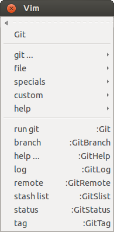
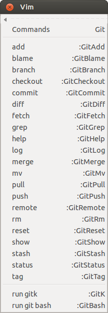
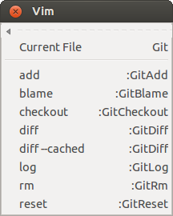
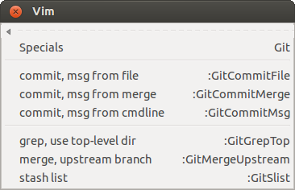
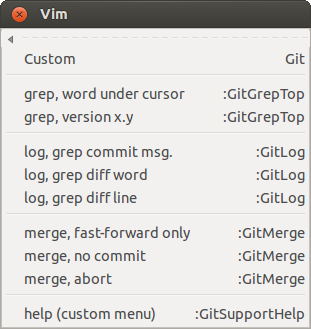

| plug-in overview |
| download vim.org |
| view on GitHub |
| Git Support – Vim Plug-In | |||||||||
|
|
|
|||||||
|
 root menu |
Git Support - Vim Plug-In( version 0.9.2 )View the ReadmeRead the Git Support Help File |
|
| FEATURES |
|---|
Integration of Git for Vim/gVim:
|
| Menus | Explanation | ||||||||
|---|---|---|---|---|---|---|---|---|---|
Menu Main : the main menuProvides quick access to various important commands, such as status and log.Arbitrary commands are run via :Git ....
Their output can be redirected into a buffer by using :Git! .... Example:
:Git! config --list These buffers may look like this:
|
|||||||||
|  |
Menu Commands : execute Git commandsThis menu contains all commands Git Support provides. Each menu entry opens the command line::GitLog |Now you can add parameters before executing the command: :GitLog -n20 -- somefile.txt Some commands open a buffer containing the requested information:
|
||||||||
|  |
Menu File : manage the current fileActs on the file in the current buffer. |
||||||||
|  |
Menu Specials : some helpful commandsThe menu provides various specialized versions of commands. Each command comes with its own help entry, such as :help :GitGrepTop.For short commit messages use: :GitCommitMsg Fix a minor issue in the previous commitFor taking the commit message from the current file: :GitCommitFile %For commiting a merge: :GitCommitMergeThis will take the standard commit message from BASEDIR/.git/MERGE_MSG and commit instantly:
Merge remote-tracking branch 'origin/master' Conflicts: somedir/thefile.txt To run grep within the context of the top-level directory: :GitGrepTop someword To merge the upstream branch (the branch is determined automatically, but further arguments are accepted): :GitMergeUpstream --ff-only |
||||||||
|  |
Menu Custom : custom commandsA configurable menu for custom commands. This provides a place for often used combinations of flags and other complicated commands. For the configuration of the custom menu see :help gitsupport-menus. Git Support comes with example menu entries: To search the repository for the word under the cursor: custom -> grep, word under cursor To grep through the log: custom -> log, grep ... To perform a fast-forward only merge: custom -> merge, fast-forward only |
Page updated: February 20 2016 / Mail to: Wolfgang Mehner
{kind=link}
{kind=link}
{kind=link}
{kind=link}
{kind=link}
{kind=link}